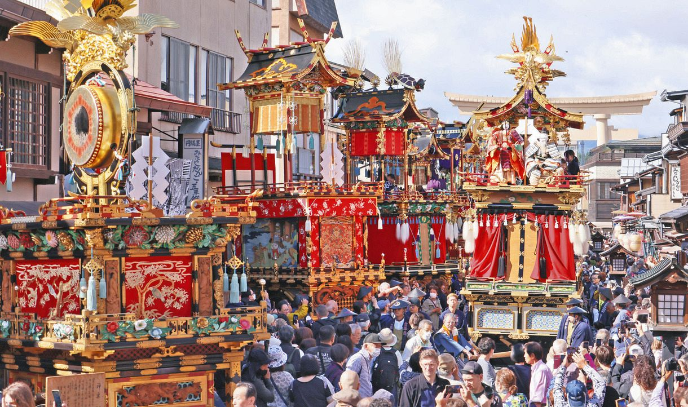
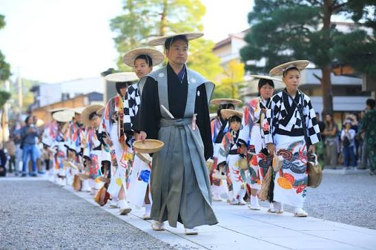
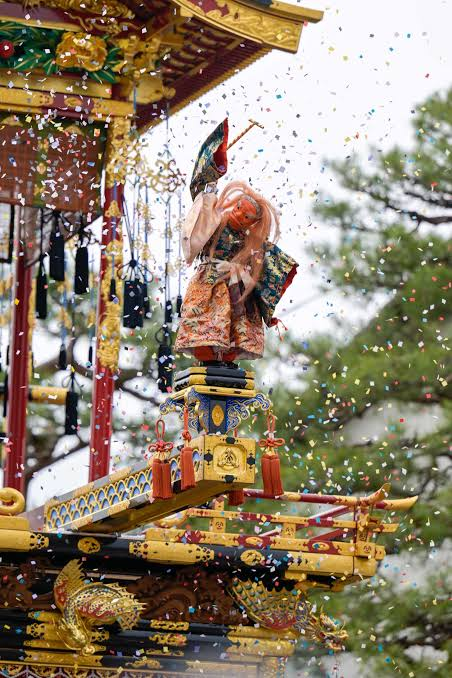

👆 Tap any word to see its meaning and an example. Tap 訳 to see the English for one sentence.

大きい 屋台です。

伝統的な衣装です。

大きい からくり人形です。
New Words
高山祭 — Takayama Festival
毎年 — every year
観光客 — tourist
屋台 — festival float
からくり人形 — mechanical puppet
提灯 — paper lantern
雰囲気 — atmosphere / feeling
昔 — long ago / the past
10月になると、岐阜県の高山では、高山祭があります。
When October comes, the Takayama Festival is held in Takayama, Gifu Prefecture.
高山祭は、日本の有名なお祭りの一つです。
The Takayama Festival is one of the famous festivals in Japan.
毎年、日本のいろいろな場所から、たくさんの人が高山に来ます。
Every year, many people come to Takayama from different parts of Japan.
外国から来る観光客もたくさんいます。
There are also many tourists from other countries.
お祭りで特に人気があるのは、屋台です。
The festival floats are especially popular.
屋台はとても大きくて、古いものもあります。
The floats are very large, and some of them are very old.
屋台には、きれいな飾りがたくさんあって、細かいところも綺麗です。
They have many beautiful decorations, with detailed designs throughout.
中には、からくり人形がある屋台もあります。
Some floats also have mechanical puppets.
人形が動くと、見ている人は「すごい！」と言います。
When the puppets move, people watching them say, “Amazing!”
夜になると、屋台に提灯がつきます。
At night, paper lanterns are lit on the floats.
昼とは違う雰囲気になって、とても綺麗です。
The atmosphere becomes different from the daytime, and it is very beautiful.
写真を撮ったり、屋台を見たりしながら、町を歩く人もたくさんいます。
Many people walk around the town while taking pictures and looking at the festival floats.
昔から続いているお祭りを見て、日本の文化を楽しむことができます。
You can enjoy Japanese culture by seeing a festival that has continued since long ago.
1
📝 もんだい (Reading Comprehension)
1. 高山祭は、どこで ありますか。
2. 毎年、どんな 人が 高山に 来ますか。
3. お祭りで 特に 人気があるものは 何ですか。
5. 夜になると、屋台は どうなりますか。
6. お祭りで、人は 何を しながら 町を 歩きますか。
💬 Let's Talk (はなしましょう)
あなたの 国に、昔から 続いている お祭りが ありますか。
お祭りで、どんなものを 見たいですか。
2